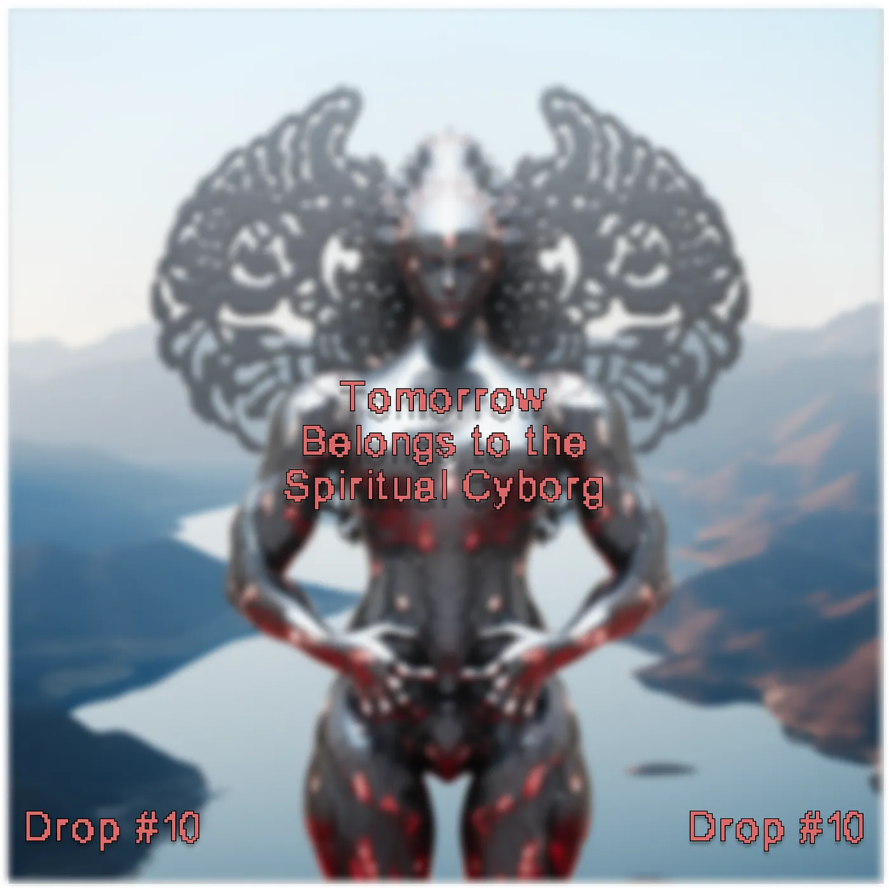
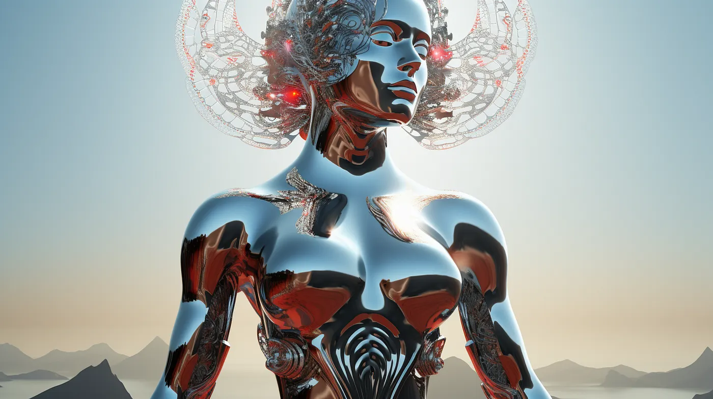

Drop #10 · January 31, 2024 · 5 min read
To conjure all the future struggles
Hey everyone (▰˘◡˘▰)
Second DROP of the month, almost feeling like a professional publication. Don’t get it twisted. Our friend Simone Robutti is back at it with another very WEIRD techno-spiritual trip. An ode to the Spiritual Cyborg to come, an awakening to conjure all the future struggles. A poetic addition to the ever-unfolding mosaic of techno-spirituality that this newsletter is weaving.
Simone is a knot of flows and occasionally he's a person too. He engages in Tech Unionism, Algorithmic Accountability, Common Cybernetics, and Democratic Organizational Design. He works as a tech lead in AI Forensics, and a consultant/trainer on Organization and Process design. You can find his blog at this link.
If you want to propose an article for this newsletter send an email to reincantamento@gmail.com and consider donating to support our work ^_^

The tech industry is undergoing a cold class war. While the conditions for an intense struggle are present, a freeze of ideological systems stops the direct escalation.
One side is deploying ineffective spiritual weaponry such as extropianism, effective altruism, network optimism (what Torres defined as TESCREALism), and an array of gnostic devices; the worker side, on the other hand, is still adapting old ideological tools to new conditions, ranging from remixes of historical materialism to suit the Information Economy to new flavors of Free Software ideology.
The tech elites hide their ideology behind a veil of spirituality, while the tech worker movement is just beginning to build its novel ideological toolbox but still lacks any traction on the spiritual side. This results in a low-intensity struggle that attracts only the people more receptive to the presented arguments, being declarations of Promethean power or appeals to class consciousness
The less exciting, bitter reality is that most Tech Workers are unfazed or, at most, mildly stressed by the endless wave of tactical layoffs and feel disarmed in front of industrial restructuring.
There's little direct conflict, mostly materialized in local protests and strikes, minor attempts at adversarial interoperability, and occasionally some direct competition as is the case with the crypto-commons movement, the tech-cooperative ecosystem, and broader attempts at generalizing worker’s struggles inside tech companies on a bigger scale. The vast majority of what is portrayed as conflictual is still comfortably following on the track of the gnostic techno-chauvinist hackerism that rooted itself in Silicon Valley in the 60s.
Now, this void of spirituality should be addressed by resuming the work of cyberneticians of the 60s, who correctly identified the connection between Cybernetics, and then System Theory, with a non-dualist form of consciousness: any system needs to imply an outside that cannot be modeled, but only dealt with. Cybernetics forces us to acknowledge how we are subject to forces greater than us, that we can react to, that we can partially observe, but never fully tame, or fully encompass.
A Third Way, beyond the false dichotomy of Gnosticism and Disenchantment, is necessary: Cybernetics offers us a way out.
Surrendering to these higher forces allows us to come to terms with our limits, but also embrace our oneness with one another, with the external environment, with other biological and non-biological processes, being connected and whole with the totality of what surrounds us. This is in direct opposition to the Gnosticism of Silicon Valley: we can’t be separate from our environment, and our mind can’t be separate from the body. We are what we are only in the here and now. We are indeed defined by our context. There’s no core, no independent self. There's no mind uploading, no AGI, no egocentric mind empowerment.
To counter the Promethean hacker self-mind of Silicon Valley, a new, stronger archetype is arising: the Fractal Spiritual Cyborg. While still subject to the greater forces and bombarding, noisy signals from the outside, these Cyborgs develop spirit and agency through the consciousness of their machine brain, tuning it towards their moral goal: one part signal-processing machine, one part conscious spirit. Emancipation from the passive machine condition we are born into can happen only by surrendering and acknowledging the inevitability of our passive, unconscious, automatic reactions.

Contrary to the Cyberneticians of the '60s, the knowledge acquired should not be employed by the spiritual cyborg solely to enhance productivity and direct our information processing exclusively toward individual egoistic goals. Instead, machine awareness should be deployed towards the development of a Global Spirit Machine, connecting us into a collective, a system serving each knot in the flow as much as it serves the spirit machine itself.
The Fractal Spiritual Cyborg embodies fractality as human subjectivity represents a specific scale within the broader spectrum of emergent intelligence. This phenomenon mirrors similar patterns observed at smaller scales, such as the allostatic interaction among individual cells in the human body, as well as at larger scales, encompassing emergent intelligence at the organizational or global level. It is a cyborg composed of interconnected entities, resembling knots in the same flow. Although distinct from one another, each entity is subject to the overarching flow and an integral part thereof.
The Spiritual Cyborg will use the Promethean Fire to light a bonfire. They will dance around the fire the whole night, stomping the ground and from the ground, drawing more energy than it consumes in the ecstasy of the movement. Each cyborg dances to the rhythm of the same music, yet each one with its patterns and variations. On this fire, we will burn all dreams of transcendence and all promises of salvation. To take its place, the immediate realization that the General Intellect Unit, the Global Brain, has always been here.
Technology is just a means to facilitate the awareness of our limits and mutual interdependence. Thus, technology shall become the means to empower us through inter-reliance, dissolving egos in the process rather than individualizing us. The Spiritual Cyborg kills the dream, where we all live in the guise of the man-child that today dominates the growth of technology, trying to replace their subservient mothers with a piece of software.
They promised us that by wielding technology, we would become Gods. They enslaved us by either making us click on ads or making us work weekends to force people to click on ads.
Techno-Capital is a golden colossus built on lies. The time has come to crush it to the ground and to create a new World on its ruins. The Third Information Era must come to an end: tomorrow belongs to the Spiritual Cyborg.